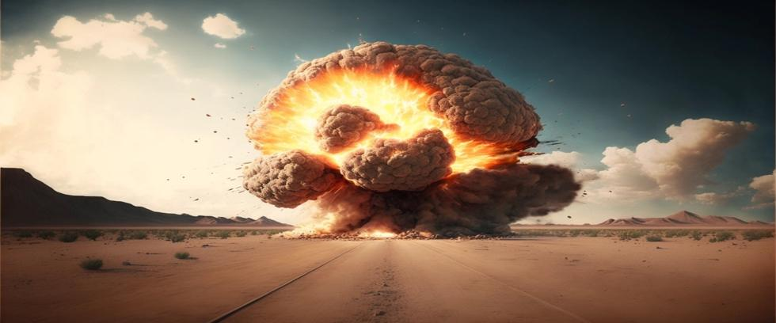

No technology has threatened our world as profoundly as nuclear weapons have. From their devastating use in World War II to their central role in Cold War politics, nuclear arsenals have cast a long shadow over international affairs. Yet for many, details about how nuclear weapons work, why they were developed, and the risks they pose, remain a mystery.
Understanding the basics is important. Nuclear weapons are not relics of a bygone era. The terrible destruction they threaten remains at the core of national security strategies today.
What Are Nuclear Weapons
Nuclear weapons are devices designed to release massive amounts of energy through nuclear reactions. There are two primary types:
- Fission bombs (atomic bombs): These weapons split atomic nuclei in the atoms of uranium-235 or plutonium-239, thereby releasing tremendous amounts of nuclear binding energy.
- Fusion bombs (hydrogen bombs): Thermonuclear warheads use a fission bomb to trigger a fusion reaction—the merging of nuclei in hydrogen isotopes to release even more energy.
The power of a nuclear explosion comes primarily from converting a tiny amount of mass into a huge amount of energy, as described by Albert Einstein’s famous equation, E=mc².
How They Were Developed
The development of nuclear weapons began during World War II under the Manhattan Project, a secret research and development program by the United States, the United Kingdom, and Canada. The project culminated in the first successful atomic bomb test at the Trinity Site in New Mexico in 1945.
Less than a month later, the U.S. dropped atomic bombs on Hiroshima and Nagasaki, spurring Japan’s decision to surrender and bring an end to World War II. Those events introduced the world to the terrifying power of nuclear weapons and opened the door to a new era of military strategy and political tension. Before long, a dangerous nuclear arms race started between the United States and the Soviet Union, ushering in the Cold War.
How They Work
Fission bombs contain conventional explosives that compress a subcritical mass of fissile material into a supercritical mass, thereby initiating a nuclear chain reaction. Neutrons expelled when atoms split cause more atoms to split, leading to an exponential release of energy.
Fusion bombs take this a step further. A fission explosion is used to heat and compress isotopes of hydrogen, causing their nuclei to fuse and release much more energy than fission bombs can.
The results are catastrophic. Immediate devastation from blast and radiation is followed by mass fires, fallout, and even nuclear winter.
Global Nuclear Arsenals Today
Nine countries are known to possess nuclear weapons:
- The United States, Russia, China, France, and the United Kingdom. These are approved nuclear weapons states under the Treaty on the Non-Proliferation of Nuclear Weapons (NPT).
- India, Pakistan, Israel, and North Korea. These countries are nuclear-armed but remain outside the approved NPT framework.
Together, these nations possess over 12,000 nuclear warheads, with thousands deployed and ready for use on short notice.
While treaties like the New START agreement between America and Russia have reduced stockpiles since the peak of the Cold War, New START is currently suspended, and no active treaties limiting nuclear arms exist anywhere in the world. Nuclear arsenals have also grown more sophisticated, with greater accuracy and variable yields. Particularly concerning is the recent deployment of new tactical nuclear weapons that have lowered the barrier for nuclear weapons use. Once Pandora’s box is opened, the nuclear taboo is eliminated.
The Effects of a Nuclear Explosion
The impact of a nuclear weapon is devastating. Effects include:
- Blast wave: People are killed and buildings are damaged far from the epicenter.
- Thermal radiation: Burns, fires, and widespread destruction occur over vast areas.
- Ionizing radiation: Can result in radiation sickness and increased long-term cancer risks.
- Fallout: Airborne radioactive particles travel through the atmosphere before falling to Earth, thereby contaminating land, water, and food supplies for years.
A large-scale nuclear exchange may also create a nuclear winter—a severe, prolonged reduction of global temperatures due to smoke and soot blocking surface sunlight. Agricultural food production is devastated, leading to mass starvation if atmospheric contamination is severe enough.
Why Nuclear Weapons Still Matter
Today, long after the Cold War ended, nuclear weapons remain central to many nations’ security strategies. Concepts like Mutually Assured Destruction (MAD) still influence military planning. MAD assumes the threat of nuclear retaliation discourages nuclear-armed countries from launching nuclear strikes against other nuclear-armed nations.
However, today’s risks are less transparent and predictable than they were in the past:
- Accidents and false alarms: Mechanical failure or human error could launch nuclear weapons by mistake.
- Regional conflicts: Tensions between nuclear-armed neighbors like India and Pakistan elevate risks.
- Terrorism: The threat of non-state actors acquiring nuclear material to build nuclear weapons is a growing concern.
- Cyber threats: Cyberattacks on nuclear command and control systems are increasingly possible, and could trigger unauthorized launches that lead to a nuclear war.
The very existence of nuclear weapons condemns humanity to live with the always-present, if largely unseen, threat of nuclear Armageddon.
Moving Toward Disarmament
Efforts to reduce nuclear risks include international diplomacy, arms control treaties, and grassroots advocacy. Key agreements include:
- NPT (1970): Aims to prevent the spread of nuclear weapons.
- Comprehensive Nuclear-Test-Ban Treaty (CTBT): Bans all nuclear explosions. Although the CTBT never entered into force, it spurred the United States, the Soviet Union, and England to negotiate and sign the Limited Test Ban Treaty (LTBT) in 1963, thereby prohibiting nuclear testing in the atmosphere, underwater, and in outer space.
- New START Treaty: Signed by the US and Russia in 2008, the treaty is now suspended due to tensions over the war in Ukraine.
- Treaty on the Prohibition of Nuclear Weapons (TPNW): Adopted by the United Nations in 2017, it seeks to make nuclear weapons illegal under international law.
Youth movements, civil society organizations, and international coalitions continue to advocate for a world without nuclear arms. Education and public awareness are critical to building pressure for change.
Why the Basics Matter
Nuclear disarmament is not a distant, abstract issue from the past. Nuclear weapons still influence international relations and national security frameworks today. A basic understanding of their history, how they work, and the danger they still represent to every human being on Earth is essential for realizing why we must act to eliminate nukes before it’s too late.
At Our Planet Project Foundation, we are committed to sharing this knowledge. The more we know, the better we can act, and the need for action is greater today than ever before.